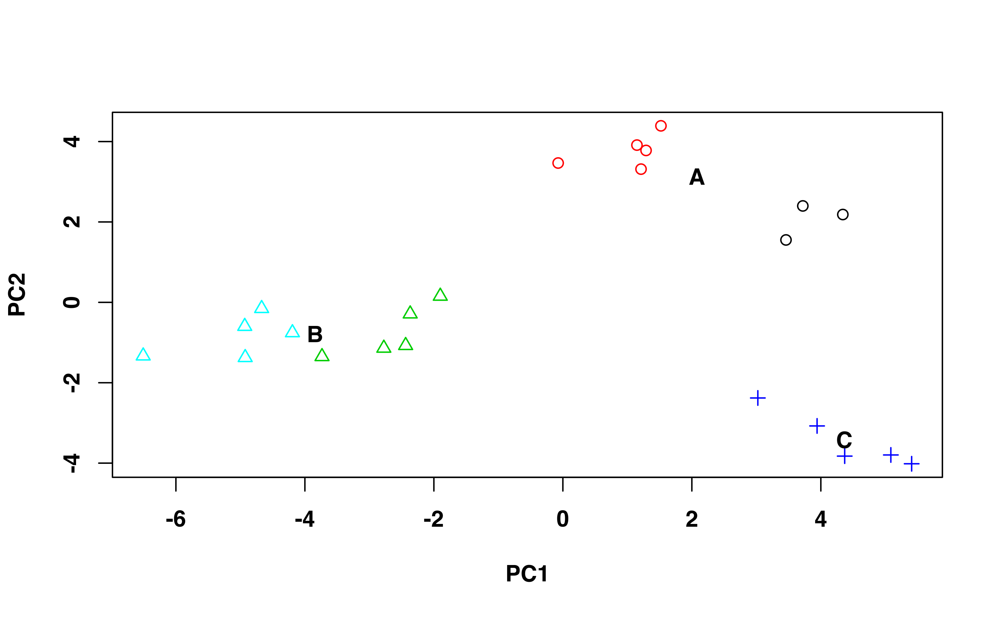

warbleR: Acoustic (dis)similarity, coordinated singing and simulating songs
Marcelo Araya-Salas, PhD
Grace Smith-Vidaurre
"2020-06-21"
Source: vignettes/warbleR_workflow_03.Rmd
warbleR_workflow_03.Rmd
Bioacoustics in R with warbleR
Bioacoustics research encompasses a wide range of questions, study systems and methods, including the software used for analyses. The warbleR and Rraven packages leverage the flexibility of the R environment to offer a broad and accessible bioinformatics tool set. These packages fundamentally rely upon two types of data to begin bioacoustic analyses in R:
Sound files: Recordings in wav or mp3 format, either from your own research or open-access databases like xeno-canto
Selection tables: Selection tables contain the temporal coordinates (start and end points) of selected acoustic signals within recordings
Package repositories
These packages are both available on CRAN: warbleR, Rraven, as well as on GitHub: warbleR, Rraven. The GitHub repository will always contain the latest functions and updates. You can also check out an article in Methods in Ecology and Evolution documenting the warbleR package [1].
We welcome all users to provide feedback, contribute updates or new functions and report bugs to warbleR's GitHub repository.
Please note that warbleR and Rraven use functions from the seewave, monitoR, tuneR and dtw packages internally. warbleR and Rraven have been designed to make bioacoustics analyses more accessible to R users, and such analyses would not be possible without the tools provided by the packages above. These packages should be given credit when using warbleR and Rraven by including citations in publications as appropriate (e.g. citation("seewave")).
Parallel processing in warbleR
Parallel processing, or using multiple cores on your machine, can greatly speed up analyses. All iterative warbleR functions now have parallel processing for Linux, Mac and Windows operating systems. These functions also contain progress bars to visualize progress during normal or parallel processing. See [1] for more details about improved running time using parallel processing.
Vignette introduction
In the previous vignette, we performed quality control processing of selected signals and made lexicons for visual classification. Here we continue with the case study of microgeographic vocal variation in long-billed hermit hummingbirds, Phaethornis longirostris [2] (and a short sidenote using Tinamus major for an example of a tonal signal) by:
Detecting signal frequency range
Extracting spectral entropy and frequency contours as time series
- Comparing methods for quantitative analysis of signal structure
- data set of 29 acoustic parameters
- spectrographic cross-correlation
- dynamic time warping on frequency contours
Visually inspecting frequency contours
Measuring acoustic parameters as a batch-process across signals
Calculating pairwise acoustic (dis)similarity between signals
Analysis of geographic variation in Phaethornis longirostris songs
We also include some examples at the end of the vignette of how to perform coordinated singing analysis and simulate songs.
This vignette can be run without an advanced understanding of R, as long as you know how to run code in your console. However, knowing more about basic R coding would be very helpful to modify the code for your research questions.
For more details about function arguments, input or output, read the documentation for the function in question (e.g. ?xcorr).
Prepare for analyses
library(warbleR) # set your working directory appropriately # setwd("/path/to/working directory") # run this if you have restarted RStudio between vignettes without saving your workspace # assumes that you are in your /home/username directory setwd(file.path(getwd(),"warbleR_example")) # Check your location getwd()
This vignette series will not always include all available warbleR functions, as existing functions are updated and new functions are added. To see all functions available in this package:
# The package must be loaded in your working environment ls("package:warbleR")
Extract acoustic parameters as time series
Detect frequency range
Raven selection tables can return low and high frequencies in your selections (e.g. if all.data or freq.cols in run_raven or imp.raven is TRUE), but the accuracy of these frequency selections depends on how the signals themselves were selected. Below we demonstrate how to visualize and detect the frequency range in your selected signals using the functions frange.detec and frange, which have options for setting bandpass filters to exclude background noise or other non-target acoustic signals.
frange.detec creates a plot that will print to your graphics device, and also outputs a data frame per recording with the frequency range. This data frame can be used in subsequent analyses if saved as an object. frange.detec works best with single signals. If used for a whole recording, frange.detec will pick up all sounds in the recording.
Finally, although we have been using Phaethornis longirostris vocalizations throughout these vignettes, these signals are harmonically structured. The functions for detecting frequency ranges, frange and frange.detec work best on tonal signals, so for this example we will use Great Tinamou ( Tinamus major) songs.
Download a tinamou recording from xeno-canto, make selections and visualize/detect frequency ranges.
tin <- querxc(qword = 'Tinamus', download = FALSE) # select a single recording tin <- tin[tin$Recordist == "Marcelo Araya-Salas", ] # download this recording querxc(X = tin, download = TRUE) mp32wav()
# here we will use manualoc to select signals within this recording # display only part of the recording to make manualoc run faster manualoc(flist = "Tinamus-major-154191.wav", flim = c(0, 4), tdisp = 60) # read the selections back into the global environment Tin.sels <- read.csv("manualoc_output.csv") str(Tin.sels) # cut the original wave file by selections for frange.detec below writeWave(seewave::cutw(readWave("Tinamus-major-154191.wav"), from = Tin.sels$start[1], to = Tin.sels$end[1], f = 44100, plot = FALSE, output = "Wave"), filename = "Tinamus-major-154191-1.wav") writeWave(seewave::cutw(readWave("Tinamus-major-154191.wav"), from = Tin.sels$start[2], to = Tin.sels$end[2], f = 44100, plot = FALSE, output = "Wave"), filename = "Tinamus-major-154191-2.wav")
# note that changing the threshold argument in combination with the bandpass argument can improve the detection frange.detec(readWave("Tinamus-major-154191-1.wav"), flim = c(0, 2.5), bp = c(0, 3), threshold = 15, plot = TRUE)
# here, giving a strict bandpass with very low threshold improves frange detection # since the curving end of the tinamou signal is lower amplitude than the rest of the signal frange.detec(readWave("Tinamus-major-154191-1.wav"), flim = c(0, 2.5), bp = c(0, 3), threshold = 1, plot = TRUE)
The function frange allows you to simultaneously return the frequency ranges for all signals in a selection table, including the graphical output as frange.detec. Check out the resulting image file in your graphics device. In addition to image files, this function returns the original selection table, as a data frame with the newly calculated low and high frequency measurements.
Extract spectral entropy as a time series
Spectral entropy can be calculated as time series in selected signals and plotted onto image files. Previously, spectral entropy was only available as a sole measurement across a selection, as measured by specan. Check out the resulting image files in your working directory.
Phae.hisnrt <- read.csv("Phae_hisnrt.csv", header = TRUE) str(Phae.hisnrt) se <- sp.en.ts(Phae.hisnrt, wl = 300, length.out = 10, threshold = 10, img = TRUE, img.suffix = "sp.en.ts", type = "b", ovlp = 90, sp.en.range = c(-25, 10), flim = c(2, 10), picsize = 0.75, title = FALSE) str(se)
Visualizing frequency contours with trackfreqs
The function trackfreqs allows you to create spectrograms and visualize the accuracy of dominant frequency and fundamental frequency measurements.
Use trackfreqs on all the recordings for which you want to extract frequency contours as a time series, or later, calculate other frequency measurements. Scroll through all the spectrograms to get a feeling for how well the frequency measurements will be performed across your recordings.
Running trackfreqs can allow you to decide which frequency parameters to use in subsequent analyses, namely specan and dynamic time warping methods. Also, ff the frequency measurements look acceptable with the bandpass setting used in trackfreqs, use that same bandpass while running specan.
# Note that the dominant frequency measurements are almost always more accurate trackfreqs(Phae.hisnrt, wl = 300, flim = c(2, 10), bp = c(1, 12), it = "jpeg") # We can change the lower end of bandpass to make the frequency measurements more precise trackfreqs(Phae.hisnrt, wl = 300, flim = c(2, 10), bp = c(2, 12), col = c("purple", "orange"), pch = c(17, 3), res = 100, it = "jpeg", picsize = 0.8)
Note that the fundamental frequency measurements are not always very accurate, so we will remove fundamental frequency measurements later on.
Extract fundamental or dominant frequency contours as a time series
These functions return a data frame that contains estimated frequency contours as a time series across each signal in the input data frame. You can also specify if you want to create image files with the estimated frequency contours plotted over spectrograms. You can change argument settings to better visualize the signals or change the estimation of the frequency contour. For instance, the argument threshold (as in autodetec) controls the amplitude threshold for estimating frequency values at each time point. Note that the fundamental frequency contour estimation can often have errors, and tends to perform best with more tonal signals. The frequency contours are those that can be visualized using trackfreqs.
Manually tailor frequency contours with seltailor
The functions above to track/extract dominant and fundamental frequency contours perform best with more tonal signals. The frequency measurements for signals with harmonic structure tend to jump around, and might not always match your own visual tracking of frequency contours. If this is the case, you can use the function seltailor to fix frequency contours where individual frequency measurements are clearly far off from the frequency contour detected by the human eye. The seltailor function is the same used in vignette 2 in this series, but by changing a few arguments, you can use seltailor to fix frequency contours.
Note that manually fixing frequency contours might not make sense, depending on your question and/or the contour in question. For instance, a dominant frequency contour for a harmonic signal that jumps around and does not form a smooth contour may in fact be the truth, rather than mis-estimation of the contour. On the other hand, fundamental frequencies can be more easily traced by the human eye across a signal, so using seltailor to fix a frequency contour that jumps around the signal makes more sense.
When the new graphics window for seltailor appears, it will show spectrograms as we saw in vignette 2, but with frequency contours plotted as points over each spectrogram. To fix the frequency contour, click near the malaligned points to place them over the frequency contour that you detect by eye. seltailor makes a new .csv file in your working directory that merges your original data frame (below, Phae.hisnrt) with the modified frequency time series (below, ff_df with any modified frequency values). To check that your manual tracing improved frequency contours, you can use trackfreqs to make spectrograms with your new frequency contours plotted as custom contours.
# Use the original data frame of songs for the main seltailor dataset # the data frame with the fundamental frequency contours is provided for manual tracing seltailor(Phae.hisnrt, wl = 300, flim = c(2, 10), wn = "hanning", mar = 0.1, osci = TRUE, title = c("sound.files", "selec"), auto.contour = TRUE, ts.df = ff_df, col = "red", alpha = 0.6) # rename your seltailor output csv as desired, then read it back into R mff <- read.csv("seltailor_output_mff.csv") str(mff) trackfreqs(Phae.hisnrt, wl = 300, flim = c(2, 10), bp = c(1, 12), it = "jpeg", custom.contour = mff)
Count inflections across frequency contours
This function calculates the modulation index for any frequency contour or time series. The function specan (see below) also calculates a modulation index for signals, but as a single value across the length of the signal.
df_inf <- inflections(X = df_df, pb = TRUE) str(df_inf)
Quantitative measurements of acoustic (dis)similarity
Compare methods for quantitative analysis of signal structure
This section on compare.methods is taken directly from Marcelo Araya-Salas's bioacoustics blog with slight modifications.
Bioacoustic research relies on quantifying the structure of acoustic signals and comparing that structure across behavioral/ecological contexts, groups or species. However, measuring signal structure in a way that fully accounts for the variation in the signals could be a tricky task. Some of the differences that are apparent by visual inspection of spectrograms might not be picked up by some analyses. Hence, choosing the most appropriate analytical approach is a critical step.
The warbleR function compare.methods attempts to facilitate method selection. This function produces graphs (as image files in the working directory) with spectrograms from 4 signals that allow visual inspection of the performance of acoustic analysis methods at comparing those signals. The signals are randomly picked up from the provided data frame (X argument), and the function compares 2 warbleRmethods at a time. The methods available are: * cross-correlation by warbleR function xcorr * dynamic time warping on dominant frequency time series with dfDTW * dynamic time warping on fundamental frequency time series with ffDTW * spectral parameters with specan
In the last vignette, we tailored selections of Phaethornis longirostris songs that were originally downloaded from xeno-canto, detected by autodetecand filtered by signal-to-noise ratio (SNR). Here we will pick up the workflow with these filtered and tailored selections, using the data frame Phae.hisnrt.
Phae.hisnrt <- read.csv("Phae_hisnrt.csv", header = TRUE) compare.methods(X = Phae.hisnrt, flim = c(0, 10), bp = c(0, 10), wl = 300, n = 10, methods = c("XCORR", "dfDTW"))
compare.methods will produce 10 image files in the working directory (since we specified n = 10) that look like this:
In this graphic, the acoustic pairwise distance between signals is shown next to the arrows linking them. The font color of a distance value corresponds to the font color of the method that generated it, as shown in the scatterplots (in this case black font represents XCORR distances). Distances are standardized, with 0 being the distance of a signal to itself and 1 the farthest pairwise distance in the pool of signals. Principal Component Analysis (princomp function) is applied to calculate distances when using spectral parameters (SP). In this case, the first 2 PC’s are used. Classical Multidimensional Scaling (also known as Principal Coordinates Analysis, cmdscale function) is used for all other methods. The image file name contains the methods being compared and the row number of the selections. This function internally uses a modified version of the spectro function from the seewave package to create spectrograms. Note that the spectrograms are all plotted with the same frequency and time scales.
Also note that the graphs contain 2 scatterplots (1 per method) of the acoustic space of all signals in the input data frame X. The position of the 4 signals in the spectrograms is highlighted in the acoustic space scatterplot. These graphics allow you to directly assess if the distances between signals in the acoustic space accurately represent the spectrographic similarity (e.g. how similar their acoustic structure looks in the spectrograms).
You can run compare.methods for any combination of the quantitative methods for assessing acoustic (dis)similarity mentioned above. Importantly, to include the SP method (spectral parameters measured by the function specan), you need a large enough dataset, as the PCA that summarizes the spectral parameters needs more units (rows) that variables (columns).
Measure acoustic parameters with specan
We can now perform acoustic measurements with the function specan. This function relies on the temporal coordinates in selection tables to measure 29 parameters across selections. specan is a batch process that is faster than calculating measurements manually, e.g. one selection and recording at a time. specan uses and customizes several functions available in the seewave package.
Use the bandpass filter to your advantage here, to filter out low or high background noise before performing measurements. Also note that changing the amplitude threshold will change the amplitude at which noises (including non-target signals) are detected for measurements.
params <- specan(Phae.hisnrt, bp = c(2, 10), threshold = 15) write.csv(params, "acoustic_parameters.csv", row.names = FALSE)
Remove parameters derived from fundamental frequency (based on trackfreqs results).
Calculate acoustic parameters by song type
In addition to calculating acoustic parameters per individual signals using specan, you can also calculate these acoustic parameters by song type (average, minimum and maximum values per song type group).
data(list = c("Phae.long1", "Phae.long2", "Phae.long3", "Phae.long4", "selec.table")) writeWave(Phae.long1,"Phae.long1.wav") writeWave(Phae.long2,"Phae.long2.wav") writeWave(Phae.long3,"Phae.long3.wav") writeWave(Phae.long4,"Phae.long4.wav") # Add a 'song' column selec.table$song <- rep(1:4, each = 3)[1:11] # Measure acoustic parameters sp <- specan(selec.table, bp = c(1, 11), 300, fast = TRUE) # Add song data sp <- merge(sp, selec.table, by = c("sound.files", "selec")) # Caculate song-level parameters for all numeric parameters sng <- song_param(X = sp, song_colm = "song", parallel = 1, pb = TRUE) str(sng)
Dynamic time warping of frequency contours
This section on dynamic time warping methods is taken directly from Marcelo Araya-Salas's bioacoustics blog with slight modifications.
The dynamic time warping methods in warbleR all rely on functions from the dtw package, and are available for both dominant and fundamental frequencies. dfDTW and ffDTW calculate the dominant and fundamental frequency contours, respectively, of each signal and compares using dynamic time warping. You can interpolate measurements across the frequency time series using the length.out argument.
These functions return a matrix of pairwise acoustic dissimilarity (e.g. acoustic "distance") measurements that can be used in analyses of acoustic similarity, as well as image files with the frequency contours plotted over the spectrograms. If you require only the time series without the dynamic time warping analysis for either the dominant or fundamental frequency, check out the functions dftsand ffts.
Note that as the frange and frange.detec functions, the dynamic time warping functions tend to work best on more tonal signals. Check out the resulting image files in your working directory.
# Harmonic Phaethornis signals dm <- dfDTW(Phae.hisnrt, length.out = 30, flim = c(2, 10), bp = c(2, 9), wl = 300, img = TRUE) str(dm)
# Tonal Tinamou signals Tin.sels <- read.csv("Tinamus-major-154191_sels.csv", header = TRUE) dm <- dfDTW(Tin.sels, length.out = 30, flim = c(0, 2.5), bp = c(0.5, 2.5), wl = 512, img = TRUE) str(dm)
Check out Marcelo's blog for a great example of how to evaluate whether or not the dynamic time warping (dis)similarity measurements accurately represents acoustic differences.
Spectrographic cross-correlation
Cross-correlation calculates the pairwise similarity of multiple signals by spectrogram cross-correlation. xcorr calculates a correlation of the amplitude values at each step by sliding one spectrogram over the other. This function is a modified version of the corMatch and makeTemplate functions from the package monitoR. xcorr runs over multiple signals and returns a list of output, including:
- a correlation statistic for each "sliding" step
- the maximum (peak) correlation for each pairwise comparison
xcorr requires margins half the duration of the signal on either side of the signal (e.g. before and after the start and end coordinates). Signals that are very close to either the start or end of a recording may throw errors. Additionally, when sound files have been modified by bandpass filters, some pairwise cross-correlations may not work and the correlation matrix may contain NA values. xcorr now contains an argument to remove columns of the matrix that contain NA values, which will reduce the data in the matrix but also allow the matrix to be used in subsequent analyses.
Here our output is a matrix of peak correlation per pairwise comparison, with the recording-selection names as the matrix dimension names.
To visualize the cross-correlation across all pairwise comparisons, we need can use the function corrplot from the package of the same name.
Analysis of geographic variation using specan measurements
We can evaluate whether or not the observed variation in song structure is reflected by the meters we just measured. For this we will conduct a Principal Component Analysis on scaled (z-transformed) meters and look at the grouping of songs (data points) in the scatter plot.
# Run the PCA with only numeric variables of params pca <- prcomp(x = params[, sapply(params, is.numeric)], scale. = TRUE) # Check loadings summary(pca)
Importance of components:
PC1 PC2 PC3 PC4 PC5 PC6 PC7 PC8 PC9 PC10 PC11 PC12 PC13 PC14 PC15 PC16
Standard deviation 3.799 2.6465 1.7684 1.01130 0.93681 0.88418 0.8449 0.72613 0.63069 0.52078 0.44692 0.43914 0.41945 0.3552 0.23923 0.18924
Proportion of Variance 0.481 0.2335 0.1042 0.03409 0.02925 0.02606 0.0238 0.01758 0.01326 0.00904 0.00666 0.00643 0.00586 0.0042 0.00191 0.00119
Cumulative Proportion 0.481 0.7145 0.8187 0.85280 0.88205 0.90811 0.9319 0.94948 0.96274 0.97178 0.97844 0.98487 0.99073 0.9949 0.99685 0.99804
PC17 PC18 PC19 PC20 PC21 PC22 PC23
Standard deviation 0.15921 0.15130 0.07228 0.05806 0.03699 0.02449 2.283e-15
Proportion of Variance 0.00084 0.00076 0.00017 0.00011 0.00005 0.00002 0.000e+00
Cumulative Proportion 0.99888 0.99965 0.99982 0.99993 0.99998 1.00000 1.000e+00# Extract PCA scores pcascor <- as.data.frame(pca[[5]]) # Plot the 2 first PCs plot(pcascor[, 1], pcascor[, 2], col = as.numeric(params$sound.files), pch = 20, cex = 1, xlab = "PC1", ylab = "PC2") # Add recordings/individuals labels x <- tapply(pcascor[, 1], params$sound.files, mean) y <- tapply(pcascor[, 2], params$sound.files, mean) labs <- gsub(".wav", "", unique(sapply(as.character(params$sound.files), function(x){ strsplit(x, split = "-", fixed = TRUE)[[1]][3] }, USE.NAMES = FALSE))) text(x, y, labs, cex = 0.75)

Songs are grouped by sound file. As each sound file represents a single individual, this suggests that songs have individual signatures. Let's look at the song type level. First, we need to classify the songs by song type. We can check the spectrograms we previously created to do this.
Songs from sound files 154070 and 154072 seem to belong to the same song type. Sound files 154129 and 154161 represent a different song type. Finally, the songs from each of the other 2 sound files have a unique structure, so each one represents a different song type. Sound file 154123 is represented here too, but in vignette 1 we decided against using signals from this recording. We can add this information to the plot by using symbols to represent song types.
# Create a song type variable # First, extract recording ID songtype <- gsub(".wav", "", sapply(as.character(params$sound.files), function(x){ strsplit(x, split = "-", fixed = TRUE)[[1]][3] }, USE.NAMES = FALSE)) # Now change IDs for letters representing song types songtype <- gsub("154070|154072", "A", songtype) songtype <- gsub("154129|154161", "B", songtype) songtype <- gsub("154138", "C", songtype) # Add song type as a variable representing symbol type plot(pcascor[, 1], pcascor[, 2], col = as.numeric(params$sound.files), pch = as.numeric(as.factor(songtype)), cex = 1, xlab = "PC1", ylab = "PC2") # Add song type labels x <- tapply(pcascor[, 1], songtype, mean) y <- tapply(pcascor[, 2], songtype, mean) text(x, y, unique(songtype), cex = 1)

Songs of the same song type are more similar (they cluster together). This PCA confirms that the visually obvious differences in the song structures are well described by the meters measured in warbleR. Likewise, it also confirms that we can detect biologically relevant differences from sound files that have undergone mp3 compression and conversion back to wav format (see also [2]). Importantly, if this analysis were for publication we would have to run other filtering steps on the acoustic parameters generated by specan, including removing any collinear variables.
Coordinated singing analysis
warbleR contains functions to visualize and test whether or not singing bouts between individuals can be considered coordinated singing. The function coor.graph plots signals as polygons to better visualize overlap between these signals.
The function coor.test uses a Monte Carlo randomization test to determine whether or not the probability of finding overlapping songs in a singing event is less than or more than what you would expect by chance. coor.test can be run simultaneously for many singing events, if all are contained in a single data frame (see coor.test documentation for more information).
The sim.coor.sing dataset contains three types of singing bouts:
# save plots in a list g <- coor.graph(sim.coor.sing, it = "jpeg", img = FALSE, res = 300) # print list of plots to graphics device g
We can test for overlapping or alternating coordinated singing using the less.than.chance argument in coor.test. Here we will test for alternating coordinated singing, since less.than.chance is set to TRUE.
Simulating songs
You can simulate songs using warbleR. Depending on your question, you can simulate songs with different numbers of subunits, subunit durations, numbers of harmonics, amplitudes, gaps between subunits, amplitude fading of subunits, among other options. Songs are simulated under Brownian motion frequency drift.
# simulate a song with 3 tonal elements ss <- sim_songs(n = 3, harms = 1) # plot the simulated song # seewave::spectro(ss) # simulate a song with 3 harmonic elements of differing amplitude ss <- sim_songs(n = 3, harms = 3) # plot the simulated song seewave::spectro(ss)
This vignette concludes the warbleR vignette series. After running the code in this third vignette, you should now have an idea of how to:
- measure frequency range of signals
- extract spectral entropy and frequency contours as time series
- manually fix frequency contours (as appropriate)
- compare and choose methods for acoustic (dis)similarity analysis
- use different methods for acoustic (dis)similarity analysis
-
specan- 29 parameters (across signals or song types) -
dfDTWandffDTW- dynamic time warping on frequency contours -
xcorr- spectrographic cross-correlation
-
- carry out steps for an analysis of geographic variation in vocalizations
- perform coordinated singing analysis
- simulate songs for other research questions
In these vignettes we presented examples of how the warbleR functions can be used in a streamlined workflow for flexible and rigorous bioacoustics analyses. The output of warbleR functions can be used in other packages for statistical analyses, such as machine learning.
Citation
Please cite warbleR when you use the package:
Araya-Salas, M. and Smith-Vidaurre, G. (2017), warbleR: an R package to streamline analysis of animal acoustic signals. Methods Ecol Evol. 8, 184-191.
Reporting bugs
Please report any bugs here.
- Araya-Salas, M. and G. Smith-Vidaurre. 2016. warbleR: an R package to streamline analysis of animal acoustic signals. Methods in Ecology and Evolution. doi: 10.1111/2041-210X.12624